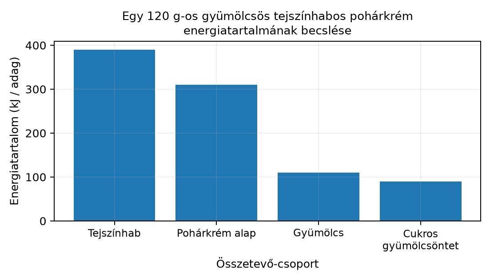

Egy cukrászüzemben nemcsak a tészta, a krém és a bevonat minőségét kell ismernünk, hanem azt is, hogy a kész sütemény mennyi energiát és tápanyagot ad a vendégnek. A pultban gyakran hangzik el a kérdés: „Melyik a legkönnyebb szelet?” vagy „Mennyi cukor van ebben?” A felnőttképzésben dolgozó cukrásznak tudnia kell számolni, mert a tápértékszámítás alapja a kalkulációnak, a diétás termékfejlesztésnek és a csomagolt termékek jelölésének is. Ez az alfejezet arra épül, hogy az élelmiszerek összetevőit – fehérjét, zsírt, szénhidrátot, rostot – már ismerjük, és megtanítja, hogyan válik ebből energetikai és táplálkozási adat.
A vendég ritkán úgy választ, hogy pontosan számolja a kilojoule-t, mégis a sütemény megítélésében szerepe van annak, hogy egy könnyű gyümölcsös pohárkrém vagy egy vajas krémmel töltött tortaszelet kerül a tányérra. A diétás, sportoló vagy cukorbeteg vendég sokszor konkrét adatot kér: mennyi szénhidrát van egy szeletben, mekkora az energiatartalom. Az előrecsomagolt termék csomagolásán pedig jogszabályi tájékoztatási kötelezettség lehet a tápértéktáblázat. Ha a cukrász nem tudja kiszámítani a késztermék energia- és tápanyagtartalmát, akkor nem tudja megtervezni a kínálatát, nem tudja elszámolni a receptúra anyagköltségét, és nem tudja hitelesen tájékoztatni a vendéget.
Képzeljünk el egy 120 g-os gyümölcsös tejszínhabos pohárkrémet. Ha „szétszedjük” az energiát, durván a következő képet kaphatjuk:

A diagram csak becslés, de jól mutatja a lényeget: a zsiradékban gazdag tejszínhab arányosan sok energiát ad, míg a friss gyümölcs keveset. A cukrásznak ezért kell elemenként ismernie a tápanyag- és energiatartalmat, nemcsak a késztermék összesítését.
Definíció. Az élelmiszer energiatartalma az a hő- vagy kémiai energiamennyiség, amely az emberi szervezet számára felszabadítható a tápanyagok – elsősorban a fehérje, a zsír, a szénhidrát, az étkezési rost, a szerves savak és az alkohol – lebontása során. Az energiatartalmat kilojoule-ban (kJ) és kilokalóriában (kcal) adjuk meg.
Szabály. A tápértékszámításban a makrotápanyagok fajlagos energiatartalmát átváltási tényezőkkel szorozzuk. A 1169/2011/EU rendelet XIV. mellékletében szereplő, általánosan alkalmazott tényezők – tanulási értékként, kerekítve – a következők:
| Tápanyag | Energia, kJ/g | Energia, kcal/g |
|---|---|---|
| Fehérje | 17 | 4 |
| Szénhidrát | 17 | 4 |
| Zsír | 37 | 9 |
| Étkezési rost | 8 | 2 |
| Alkohol (etanol) | 29 | 7 |
| Szerves sav, poliol | 10–13 | 2,4–3 |
A táblázatban a polioloknál és szerves savaknál az érték anyagtól függ; pontos számszerű értéknél mindig az adott összetevő élelmiszer-összetételi adatbázisát vagy a jogszabály szerinti átváltási tényezőt kell ellenőrizni. A napi gyakorlatban cukrászati alaptermékeknél leggyakrabban a fehérje, zsír, szénhidrát hármassal számolunk.
Összefüggés. Egy termék energiatartalmát kiszámíthatjuk a makrotápanyag-tartalomból:
ahol a tömegek grammban, az pedig kilojoule-ban értendő. A kilokalóriára való átszámítás:
vagy gyors fejszámolásra .
Példa. Ha egy 100 g-os cukrászati krémben 3 g fehérje, 18 g zsír és 22 g szénhidrát van, akkor:
Ennek kcal-beli értéke: , gyors becsléssel .
Jogszabály. A fogyasztók élelmiszerekkel kapcsolatos tájékoztatásáról szóló 1169/2011/EU rendelet szerint az előrecsomagolt élelmiszerek tápértékjelölésénél az energiaértéket kJ-ban és kcal-ban is fel kell tüntetni, és az energiaértéket a rendelet XIV. mellékletében megadott átváltási tényezőkkel kell kiszámítani (ellenőrizendő: 1169/2011/EU XIV–XV. melléklet). A frissen, pultból értékesített sütemények tápértéktájékoztatása eltérő lehet attól függően, hogy a terméket csomagolva vagy nem előrecsomagolt formában értékesítik; a konkrét kötelezettséget a termék forgalmazási módja és a hatályos nemzeti előírás szerint kell ellenőrizni. Az allergén-tájékoztatás viszont vendéglátásban is kötelező, ezt a későbbi alfejezetek részletesen tárgyalják.
Továbbvitt eredmény. Ez a számítási séma az alapja a receptúrából végzett tápértékszámításnak, amelyet a Tápérték- és energiaszámítás receptúrából, allergénmátrix alfejezetben teljes receptúrára is végigvezetünk. Ugyanezt a logikát használjuk a Különleges táplálkozási igények: diétás, cukormentes, gluténmentes, laktózmentes és növényi alapú cukrászat alfejezetben, ahol a módosított összetételű termékek energiacsökkenését vagy cukortartalmát értékeljük.
A cukrászati termékek energiatartalmának értékeléséhez nem elég az adott terméket számolni; látni kell azt is, mennyi energiára van szüksége egy embernek egy nap.
Szabály. A napi energiaszükséglet egyéni tényezőktől függ: nem, életkor, testtömeg, izomtömeg, fizikai aktivitás, egészségi állapot, terhesség és szoptatás. Tanulási célra gyakran használjuk a közepes aktivitású felnőtt napi energiaszükségletét: nőknél kb. 7 500–8 500 kJ, férfiaknál kb. 10 000–11 000 kJ, de ez csak szemléltető tartomány, nem egyéni tanácsadásra való. A pontos szükséglet becsléséhez táplálkozási szakember által használt számítási módszert kell alkalmazni.
Jogszabály/Megjegyzés. Az élelmiszerjelölésben gyakran megjelenő napi 8 400 kJ (2 000 kcal) referenciaérték a nagy átlagra vonatkozó felnőtt referenciaérték, amely segít a fogyasztónak az egyes tápanyagok napi bevitelhez viszonyított értékeléséhez. Ezt nem egy adott személy szükségleteként kell tanítani. A referenciaértékeket az 1169/2011/EU rendelet és a nemzeti ajánlások határozzák meg; a konkrét számokat mindig ellenőrizni kell a hatályos tájékoztatási rendelet és a hazai dietetikai ajánlás alapján.
Példa. Egy közepes aktivitású, 60 kg-os női tanuló becsült napi energiaszükséglete legyen 8 000 kJ. Ha megeszik egy 900 kJ-os (120 g-os, a fenti ábra szerinti tejszínhabos) pohárkrémet, akkor az a napi energiaszükséglet -a. Egyetlen desszertnél ez már számottevő; ha a nap folyamán még több hasonló, magas zsír- és cukortartalmú terméket fogyaszt, a napi energiamérleg felborulhat.
A kiegyensúlyozott étrendben a cukrászati termékek a napi energiabevitelt kiegészítő, élvezeti értékű élelmiszerek. Nem tilos őket enni, de a napi étrendben a zöldség, gyümölcs, teljes értékű gabona, tej és fehérjeforrások mellett csak kisebb részt képviseljenek. A gyakorlatban ez azt jelenti, hogy egy esküvői torta alkalmanként elfér a kiegyensúlyozott étrendben, de a mindennapos, nagy adagú vajkrém- és tejszínkrém-fogyasztás túlzott energia- és zsírbevitelhez vezethet.
A tápértékszámításhoz nyersanyagonkénti tápanyag-összetételi adatok kellenek. Ilyeneket találunk:
A számítás során mindig 100 g nyersanyagra vonatkozó adatokkal dolgozunk, majd átszámítjuk a receptúrában szereplő mennyiségre. A tápértéktáblázat általában 100 g-ra adja meg a fehérje-, zsír-, szénhidrát- és energiatartalmat. A cukrásznak ezt kell arányosítania.
Példa. Ha a táblázat szerint a kakaópor 100 g-ja 20 g fehérjét, 11 g zsírt és 58 g szénhidrátot tartalmaz, akkor 25 g kakaóporban:
A tápértékszámítás nem tévesztendő össze a teljes kémiai elemzéssel. A receptúrából számolt adat becslés, amelynek pontossága a használt nyersanyagadatok pontosságától függ.
A cukrászati előállítás lépései megváltoztathatják a tápanyagok mennyiségét 100 g termékre vetítve, még akkor is, ha a nyersanyagokból kiinduló összes tápanyagmennyiség alig változik. A leggyakoribb hatások a következők:
| Művelet | Tápanyagra gyakorolt hatás | Cukrászati példa | Megőrzési szempont |
|---|---|---|---|
| Mosás, áztatás | Vízben oldódó vitaminok, ásványi anyagok kioldódhatnak | Gyümölcs előkészítése | Röviden áztassunk, ne áztassuk hosszan |
| Hámozás, magozás | A héjjal, maggal együtt rost és vitamin is távozhat | Gyümölcspüré készítése | Használjuk fel a felhasználható részt |
| Aprítás, reszelés | Oxigénnel érintkezve vitaminok bomolhatnak | Receptúra előkészítő aprítás | Gyorsan dolgozzuk fel |
| Hőkezelés, sütés | Magas hőn vitaminok veszíthetők; fehérjék denaturálódnak; víz távozik, ezért 100 g-ra vonatkoztatott tápanyag-koncentráció nő | Piskóta, krémes sütőben | Ne süssük túl; alkalmazzuk az előírt hőfokot |
| Főzés, forralás | Vízben oldódó anyagok távozhatnak a főzővízbe; hosszú forraláskor pusztulhatnak vitaminok | Gyümölcsöntet, krémfőzés | Csak addig forraljuk, amíg a technológia megkívánja |
| Zsiradékban sütés | Zsírfelvétel nőhet, emiatt energiatartalom emelkedik | Fánk, sütőolajban készült termék | Tartsuk az előírt sütési hőfokot, csepegtessük le a felesleget |
| Habverés, levegőbevitel | A 100 g-ra vetített energia nem változik (a levegő tömege elhanyagolható), de a térfogategységre (pl. 1 dl hab) eső energia csökken | Felvert tészta, tejszínhab | Tápértékjelölésnél tömegre számolj, ne térfogatra; kerüljük a túlzott habverést, hogy megmaradjon a szerkezet |
| Hűtés, fagyasztás | Kémiai tápanyagveszteség általában kicsi, de a víz fagyása a szerkezetet bontja | Fagylalt, parfé | Előírt hőfokon tároljunk; a felolvasztott terméket ne fagyasszuk vissza |
A legfontosabb gyakorlati szabály: a tápanyag abszolút mennyiségét a nyersanyagokból számoljuk, a késztermék tömegére vetítve adjuk meg a 100 g-ra vonatkozó koncentrációt. Ha sütés közben víz távozik el, a tápanyagok hőérzékeny része károsodhat, de a vízveszteség miatt a maradék tápanyag 100 g-ra vetített koncentrációja nő. Például egy 500 g nyers piskótatésztából 420 g kisült piskóta lesz. A fehérje abszolút tömege közel változatlan marad, de 100 g piskótában több lesz, mint 100 g nyers tésztában.
A számítás lépései:
Kidolgozott számpélda. Készítsünk egy főzött vaníliás sárgakrémet a következő tanulási recept szerint:
| Nyersanyag | Mennyiség (g) | Fehérje (g/100 g) | Zsír (g/100 g) | Szénhidrát (g/100 g) |
|---|---|---|---|---|
| Teljes tej | 300 | 3,0 | 2,8 | 4,8 |
| Cukor | 60 | 0,0 | 0,0 | 100,0 |
| Tojássárgája | 45 | 16,0 | 29,0 | 0,5 |
| Étkezési keményítő | 25 | 0,5 | 0,1 | 85,0 |
| Vaj | 15 | 0,7 | 80,0 | 0,6 |
A nyers összes tömeg:
A főzés közben elpárolgott víz legyen 40 g, tehát a kész krém tömege:
A fehérje összesen:
A zsír összesen:
A szénhidrát összesen:
Energiatartalom:
Kcal-ban:
100 g kész krémre vetítve:
Ha egy adag 65 g krémet tartalmaz, akkor az adag energiatartalma:
A bal oldali oszlop a sárgakrém energiájának megoszlását mutatja tápanyagok szerint, a jobb oldali a 100 g-ra vetített értéket nyers (hibás) és kész (helyes) tömegre. A HTML-kiadás kalkulátorában a receptúra cellái, a veszteség és az adagtömeg szerkeszthetők; a müzliszelet-feladat előbeállításként is betölthető.
A tápértékszámítás nem laboratóriumi munka, hanem rendezett számolási feladat. A gyakorlatban egy-egy termékre receptúránként egyszer kell alaposan kiszámolni, majd a kész értékeket táblázatkezelőben tárolni. A munkafolyamat:
Ellenőrzés. A számított energiatartalomnak nagyságrendileg illeszkednie kell a termék érzékszervi összetételéhez. Egy 100 g-os, sok vajat tartalmazó vajas krém energiatartalma jellemzően 1 800–2 400 kJ lehet, egy tojás–cukor–liszt piskóta jellemzően 1 150–1 300 kJ/100 g körül lehet (ellenőrizendő: tápanyagtáblázat), egy tejszínhab nélküli, könnyű gyümölcsös pohárkrém 300–600 kJ/100 g, a tejszínhabos változat 700–900 kJ/100 g körül lehet. Ezek tanulási viszonyítási értékek, a tényleges érték a receptúrától függ.
A feldolgozás során a tápértékmegőrzés minőségi ellenőrzése elsősorban a termék technológiai hibáin keresztül valósul meg.
A megőrzés ellenőrző pontjai:
A tápértékmegőrzés a cukrászatban nem jelenti azt, hogy minden terméket nyersen vagy minimálisan feldolgozva kell előállítani. A hőkezelés sok esetben élelmiszerbiztonsági követelmény: a tojásos krémeket főzni kell, a piskótát sütni, a fagylaltkeveréket pasztőrözni. A cél az, hogy a biztonsági hőkezelést ne vigyük túl, és ne rontsuk a termék tápértékét feleslegesen hosszú hőkezeléssel, többszöri ismételt melegítéssel.
A tápértékszámítás és tápértékmegőrzés során a következő hibák fordulnak elő leggyakrabban.
Hiba: nem a késztermék tömegére vetítünk. Ha a sütés vagy főzés veszteségét nem vesszük figyelembe, a 100 g-ra vonatkoztatott érték hamis lesz. Például 100 g nyers piskótatészta tápanyagát nem szabad 100 g kész piskótával azonosnak tekinteni. Ok: a víz távozása miatt a késztermék töményebb. Megelőzés: mérjük le a készterméket, és számítsuk a veszteséget.
Hiba: összekeverjük a 100 g-os adatot az adaggal. A vendég nem 100 g-ot eszik feltétlenül, hanem egy szeletet, 25 g-os minyont vagy 120 g-os pohárkrémet. Ok: csak a 100 g-ra vonatkozó adatot közöljük, adagra nem számolunk. Megelőzés: a termék tálalási egységét ismerjük, és az eladási adag tömegére is átszámolunk.
Hiba: a tápértékszámításnál csak a grammot nézzük, az energiaértéket nem ellenőrizzük. Lehet, hogy a szénhidrát adat kimaradt, vagy a zsírnál tizedesvessző tévedés történt. Ok: a táblázatkezelőben elírás, vagy a nyersanyag adat nem 100 g-ra vonatkozott. Megelőzés: a kiszámított energiatartalmat hasonlítsuk össze a termék becsült energiasűrűségével, és ellenőrizzük a tápanyag-összeget.
Hiba: a hőkezelést túlzottan hosszúra nyújtjuk. A krém vagy gyümölcsöntet túlzott forralása veszteséget okoz a vízoldható vitaminokban és a színanyagokban. Ok: bizonytalan hőfok- és időtartás, vagy a tétel elfelejtése. Megelőzés: használjunk időzítőt, és a technológiai lapon tüntessük fel a hőkezelési időt.
Egy cukrászüzemben a tulajdonos csomagolva is szeretné árusítani a házi krémes szeletet. A kereskedelmi partner kéri, hogy a csomagoláson szerepeljen tápértéktáblázat. A cukrász a receptúrából kiindulva elkészíti a számítást. A leveles tészta, a főzött sárgakrém és a tejszínhab réteg tápanyagait külön-külön kiszámolja, majd a késztermék tömegére vetíti. Azt tapasztalja, hogy a 100 g-ra eső energiatartalom 1 250 kJ körül alakul, ami a vajas leveles tészta és a tejszínhab miatt magasabb, mint egy könnyű gyümölcsös tésztáé. Ezt a vevőtájékoztatóra is felveszi, és a pultos kollégákat arra kéri, hogy a vendég kérésére tudják mondani a szelet tömegét és energiatartalmát. A számítás akkor válik igazán fontossá, amikor egy vendég közli, hogy cukorbeteg, és kérdezi a szénhidráttartalmat.
Tanulság: a tápértékszámítás nem utólagos papírmunka, hanem a vendégtájékoztatás és a termékfejlesztés eszköze.
Válaszok a Megoldások elején.
1. feladat (A). Egészítsd ki a mondatot: a tápértékszámításnál a fehérje és a szénhidrát fajlagos energiatartalma ______ kJ/g, a zsíré ______ kJ/g, a kcal-ra átszámítás szorzója körülbelül ______.
2. feladat (A). Egy pohárkrém 100 g-jában 3,2 g fehérje, 6,5 g zsír és 18,9 g szénhidrát van. Számítsd ki az energiatartalmát kJ-ban és kcal-ban 100 g-ra.
3. feladat (B). Egy 250 g-os müzliszelet alapanyagai: 80 g zabpehely, 40 g méz, 35 g vaj, 30 g dióbél, 25 g aszalt gyümölcs, 15 g cukor, 25 g víz. A gyártói táblázatból vett, 100 g-ra vonatkozó tápanyagadatok: zabpehely: 13 g fehérje, 7 g zsír, 60 g szénhidrát; méz: 0,3 g fehérje, 0 g zsír, 82 g szénhidrát; vaj: 0,7 g fehérje, 80 g zsír, 0,6 g szénhidrát; dió: 15 g fehérje, 63 g zsír, 14 g szénhidrát; aszalt gyümölcs: 2 g fehérje, 0,5 g zsír, 68 g szénhidrát; cukor: 0 g fehérje, 0 g zsír, 100 g szénhidrát. Tételezd fel, hogy a víz nem tápanyag. Számítsd ki a kész 100 g-os müzliszelet energiatartalmát kJ-ban.
4. feladat (B). Az előző szeletet 45 g-os darabokra vágják. Hány kJ és kcal jut egy adagra? Hány gramm szénhidrát van egy 45 g-os szeletben?
5. feladat (C). Egy üzemben a csomagolt piskótatekercs tápértékszámításánál a 100 g-ra vonatkozó adatot 920 kJ-ra számolták, de utólag kiderült, hogy a nyers tömeggel számoltak, nem a kész tömeggel. A sütési veszteség 12%. Mennyi a tényleges energiatartalom 100 g kész termékre?
6. feladat (D). Válassz ki egy gyakorlati receptúrát a műhelyedből vagy a tankönyvből, és töltsd ki a tápértékszámítási táblázatot: nyersanyag, mennyiség, fehérje, zsír, szénhidrát 100 g-ra, majd az összes tápanyag és az energiatartalom. Határozd meg a késztermék tömegét, és add meg az értékeket 100 g-ra és egy adagra is. Írd le, honnan vetted a tápanyagadatokat.
17; 37; 0,24.
Kcal-ban: .
A nyers összes tömeg 250 g. A kész tömeget nem adtuk meg, így a feladat szövege szerint 250 g-ból indulunk, mert a sütési veszteséget nem különböztettük meg; a tanulási példában feltételezzük, hogy a kész tömeg is 250 g. (A gyakorlatban a müzliszeletnél víz távozik, ezért a 100 g-ra vonatkozó érték ennél kicsit nagyobb lenne.)
Fehérje összesen:
Összes: .
Zsír összesen:
Összes: .
Szénhidrát összesen:
Összes: .
Energia:
100 g-ra vetítve, ha a kész tömeg 250 g:
Egy 45 g-os szelet energiatartalma:
Kcal-ban: .
Szénhidrát 100 g termékben:
45 g-os adagban:
Ha a 100 g-ra vetített 920 kJ-os érték a nyers tömegre vonatkozik, és a sütési veszteség 12%, akkor a kész tömeg a nyers tömeg 88%-a. Ugyanaz a tápanyagtartalom kisebb tömegre oszlik, ezért a 100 g kész termékre vonatkoztatott érték nagyobb:
A hiba elkerüléséhez a kész tömeggel kell számolni.
Ennél a feladatnál nincs egyetlen jó megoldás. A tanulónak a saját receptúrájával kell dolgoznia. Értékelési szempontok:
A cukrászati termék energiatartalmát a fehérje, a zsír és a szénhidrát tömegéből számoljuk ki. A fehérje és a szénhidrát fajlagos energiatartalma 17 kJ/g, a zsíré 37 kJ/g; az étkezési rost 8 kJ/g, az alkohol 29 kJ/g. A kilokalóriára átváltás körülbelül . A tápértékszámításnál mindig a késztermék tömegére vetítjük a tápanyagokat, mert a sütési veszteség változtatja a 100 g-ra eső koncentrációt. A nyersanyagonkénti 100 g-os adatokat tápanyagtáblázatból vagy gyártói adatlapról vesszük. A feldolgozás során a vitaminok és a hőérzékeny anyagok vesztesége csökkenthető rövid hőkezeléssel, gyors előkészítéssel és megfelelő tárolással. A zsiradékban sütés növeli az energiatartalmat. A napi energiaszükséglet egyénenként változik, a 8 400 kJ-os referenciaérték csak jelölési viszonyítás. Ez a számítási séma a későbbi tápértékszámítási alfejezetek – a receptúra-számítás és a különleges táplálkozási igények – alapja.